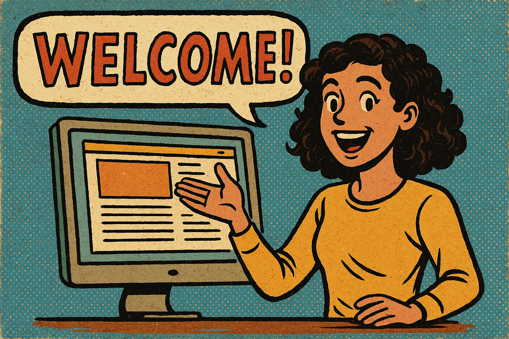

🎨 Style Guide
Modular layouts, accessible typography, vibrant colour palette and WCAG 2.2 compliance.
This site presents the Style Guide and design layers for a youth-focused platform. Explore how we combine emotion, interaction, and accessibility to build meaningful digital experiences.
“Designing for connection means making everyone feel seen, heard, and empowered.”
Our work champions intergenerational storytelling, user respect, and emotional inclusivity. Whether you're here to explore interface design or discover how digital tools can foster community — you're in the right place.
Modular layouts, accessible typography, vibrant colour palette and WCAG 2.2 compliance.
Interaction cues, visual feedback, and CTA hierarchy that guide user choices and increase clarity.
First impressions through wireframes, mood, layout rhythm, and storytelling-driven visuals.
Values mapping, inclusive language, and ethical reasoning to sustain long-term user trust.